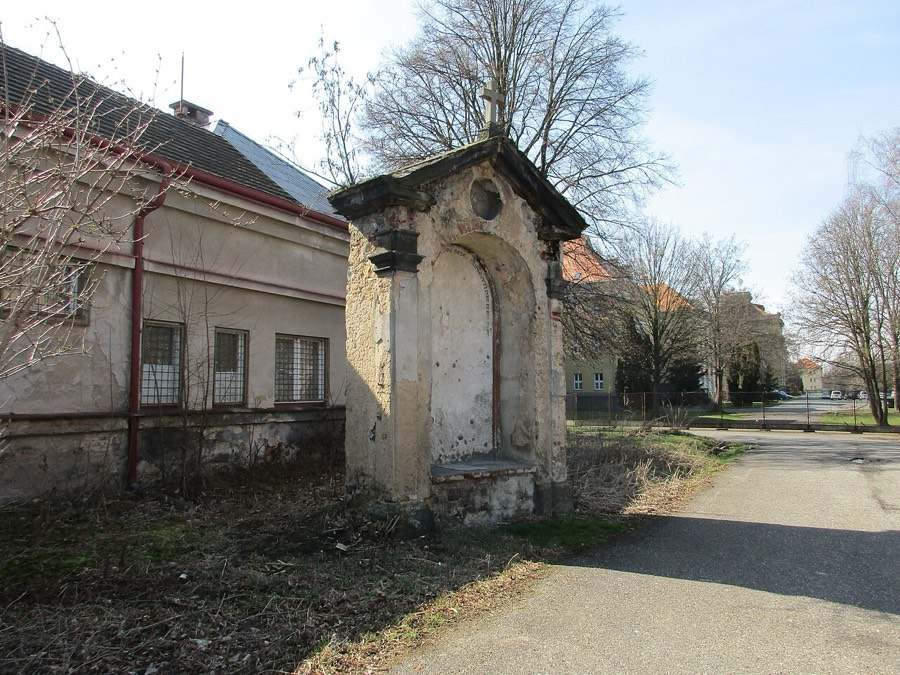

17. zastavení
Krupecká kaple
Stojí na parkovišti Leteckého muzea Kbely. Dlouho byla v havarijním stavu. V roce 2018 kolem ní vykáceli náletové dřeviny a v létě 2020 ji opravili.
- Poutní místo
- Krupka – Bohosudov
- Mariánský obraz
- Pieta (Panna Maria Sedmibolestná)
- Donátor
- hrabě Kryštof František Vratislav z Mitrovic, prezident české komory
Trasy, které vedou kolem kaple
- Celá Svatá cesta – 26,0 km, 6–7 h, pěšky
- Z Letňan polní cestou – 18,6 km, 4½–5 h, pěšky
- Cyklopouť – 23,9 km, 2–2½ h, na kole